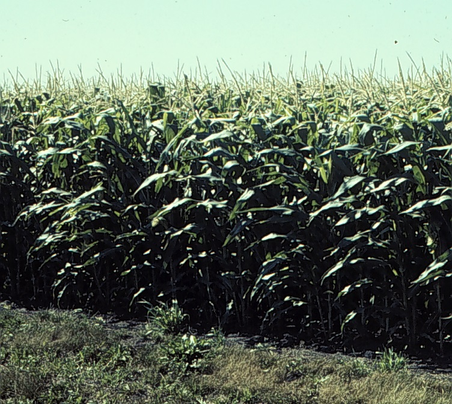

North Dakota Crop Nitrogen Recommendation Calculators
Sunflower Nitrogen Calculator

corn calculator
wheat and durum calculator
CONTACT

David Franzen
Professor/Extension Soil Specialist
Department of Soil Science, NDSU
Email: david.franzen@ndsu.edu
phone: 701-799-2565
INTRODUCTION
This application provides three NDSU crop nitrogen recommendation calculators for
use in North Dakota sunflower, corn, and spring wheat/durum, respectively.
 These calculators are designed only for use by growers and crop consultants working
within in North Dakota.
The corn calculator might also be useful in northwest Minnesota, the northern tier
of counties in South Dakota, and southern Manitoba,
since data from these areas were used to build the algorithms embedded within the
recommendations;
however, consideration of local Province or State recommendations should also be
given.
These calculators are designed only for use by growers and crop consultants working
within in North Dakota.
The corn calculator might also be useful in northwest Minnesota, the northern tier
of counties in South Dakota, and southern Manitoba,
since data from these areas were used to build the algorithms embedded within the
recommendations;
however, consideration of local Province or State recommendations should also be
given.
The research N-rate data-base underlying these calculators is from the many-years of
field research conducted by Dr. David Franzen,
Soil Extension Specialist at North Dakota State University, and others.

Nitrogen recommendation calculations are based on an economic production function
that takes into account the yield response of the crop to added N, less the cost of
the N.
The recommendation is based not only on the yield increase from additional N, but
the price of the commodity and the cost of N.
More details about this "Maximum Return to Nitrogen" recommendation system can be
found here.
 The recommendation provided also includes a "plus-minus" value. Although many
experiments were used to develop these recommendations,
there is no way for us to know the N supplying capability for the soils in each
field in North Dakota.
Therefore, we leave it to the growers and their consultants to fine tune
recommendations with their knowledge of specific field characteristics.
This is especially important in wheat, where variety choice influences protein and
the need for more or less N.
Also, choice of N application method and decision to use effective urease or
nitrification inhibitors may modify N rate.
The recommendation provided also includes a "plus-minus" value. Although many
experiments were used to develop these recommendations,
there is no way for us to know the N supplying capability for the soils in each
field in North Dakota.
Therefore, we leave it to the growers and their consultants to fine tune
recommendations with their knowledge of specific field characteristics.
This is especially important in wheat, where variety choice influences protein and
the need for more or less N.
Also, choice of N application method and decision to use effective urease or
nitrification inhibitors may modify N rate.